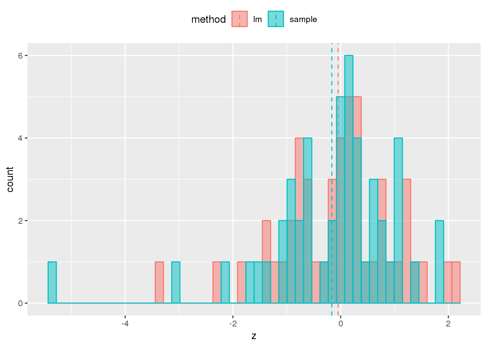

compare linear model and sample mean/var based methods
DongyueXie
2020-05-04
Last updated: 2020-05-05
Checks: 7 0
Knit directory: dear/
This reproducible R Markdown analysis was created with workflowr (version 1.6.0). The Checks tab describes the reproducibility checks that were applied when the results were created. The Past versions tab lists the development history.
Great! Since the R Markdown file has been committed to the Git repository, you know the exact version of the code that produced these results.
Great job! The global environment was empty. Objects defined in the global environment can affect the analysis in your R Markdown file in unknown ways. For reproduciblity it’s best to always run the code in an empty environment.
The command set.seed(20200403) was run prior to running the code in the R Markdown file. Setting a seed ensures that any results that rely on randomness, e.g. subsampling or permutations, are reproducible.
Great job! Recording the operating system, R version, and package versions is critical for reproducibility.
Nice! There were no cached chunks for this analysis, so you can be confident that you successfully produced the results during this run.
Great job! Using relative paths to the files within your workflowr project makes it easier to run your code on other machines.
Great! You are using Git for version control. Tracking code development and connecting the code version to the results is critical for reproducibility. The version displayed above was the version of the Git repository at the time these results were generated.
Note that you need to be careful to ensure that all relevant files for the analysis have been committed to Git prior to generating the results (you can use wflow_publish or wflow_git_commit). workflowr only checks the R Markdown file, but you know if there are other scripts or data files that it depends on. Below is the status of the Git repository when the results were generated:
Ignored files:
Ignored: .Rhistory
Ignored: .Rproj.user/
Untracked files:
Untracked: analysis/plnruv.Rmd
Untracked: code/compare_lm_sample.R
Untracked: code/cytokine_null_simu_cd4_yusha.R
Untracked: code/mash_example.r
Untracked: code/slm_cytokine_Nonnull_simu_cd4.R
Untracked: data/BR_log_cpm.RDS
Untracked: data/cytokine_cd4.RData
Untracked: output/compare_lm_sample.RData
Untracked: output/cytokine_null_simu_cd4_r250_yusha.RData
Untracked: output/lm_cytokine_Nonnull_simu_cd4.RData
Untracked: output/lm_cytokine_Nonnull_simu_cd4_2trteffect.RData
Untracked: output/lm_cytokine_Nonnull_simu_cd4_2trteffect_sizesd001.RData
Untracked: output/lm_cytokine_Nonnull_simu_cd4_2trteffect_sizesd005.RData
Untracked: output/lm_cytokine_Nonnull_simu_cd4_2trteffect_sizesd01.RData
Untracked: output/lm_cytokine_Nonnull_simu_cd4_2trteffect_sizesd4.RData
Untracked: output/lm_cytokine_null_simu_cd4.RData
Untracked: output/slm_cytokine_null_simu_cd4.RData
Unstaged changes:
Modified: code/slm.R
Note that any generated files, e.g. HTML, png, CSS, etc., are not included in this status report because it is ok for generated content to have uncommitted changes.
These are the previous versions of the R Markdown and HTML files. If you’ve configured a remote Git repository (see ?wflow_git_remote), click on the hyperlinks in the table below to view them.
| File | Version | Author | Date | Message |
|---|---|---|---|---|
| Rmd | 734e94f | DongyueXie | 2020-05-05 | wflow_publish(“analysis/compare_lm_sample.Rmd”) |
Introduction
Two methods: use limma / sample mean&var obtaining Bhat and Shat then feed into mashr-no-baseline. These two method give exactly the same Bhat but different Shat.
I want to compare those false discoveries from using sample mean&var.
To do so, I filtered out genes that appear in less than 1000 cells out of total 13000+ cells. The main reason is to make model fitting faster, and make data cleaner.
For each false discovery, I compared lfsr, Shat and distribution of z-scores from mashr_update_data. In the plot, lm stands for limma method and sample stands for sample mean&var.
library(mashr)Loading required package: ashrlibrary(ggplot2)
library(plyr)
load('output/compare_lm_sample.RData')
out = compare_lm_sample$out_lm
out.s = compare_lm_sample$out_sam
mash_data = mash_set_data(out$betahat,out$sebetahat)
mash_data.L = mash_update_data(mash_data,ref='mean')
mash_data.s = mash_set_data(out.s$Bhat,out.s$Shat)
mash_data.L.s = mash_update_data(mash_data.s,ref='mean')
get_significant_results(compare_lm_sample$mash_lm)[1] 1719 730get_significant_results(compare_lm_sample$mash_sam) [1] 2121 1198 651 2161 1242 2236 3291 2714 2994 279 880 3339 969 3180
[15] 1902 1364 1617 2340 578 1034 606 163 3020 900 1027 1735 1436summary_mm = function(idx){
#First look at lfsr. Big difference!
dat = cbind(as.numeric(compare_lm_sample$mash_lm$result$lfsr[idx,]),
as.numeric(compare_lm_sample$mash_sam$result$lfsr[idx,]))
colnames(dat) = c('lm','sample')
boxplot(dat,ylab='lfsr')
#Look at corresponding S_hat: similar median but difference variance.
dat = cbind(as.numeric(compare_lm_sample$out_lm$sebetahat[idx,]),
as.numeric(compare_lm_sample$out_sam$Shat[idx,]))
colnames(dat) = c('lm','sample')
boxplot(dat,ylab = 'S_hat')
#Distribution of z-statistics after mash_update_data
z1 = mash_data.L$Bhat[idx,]/mash_data.L$Shat[idx,]
z2 = mash_data.L.s$Bhat[idx,]/mash_data.L.s$Shat[idx,]
dat = data.frame(z = c(z1, z2), method = rep(c("lm", "sample"),each=49))
mu = ddply(dat, "method", summarise, grp.mean=mean(z))
ggplot(dat, aes(x = z, fill = method,color=method)) +
geom_histogram(alpha = 0.5,bins=50,position="identity") +
geom_vline(data=mu, aes(xintercept=grp.mean, color=method),
linetype="dashed") +
theme(legend.position="top")
}Let’s look at some genes that are identified by mashr using sample mean and variance.
summary_mm(2121)The difference of lfsr are huge. \(\hat s\) are of similar scale but the ones from sample estiamtion is more dispersed. The plot of z-statistics shows that there is an extreme z-score of sample method.
summary_mm(1198)
Again, z-statistics from sample method has heavier tails.
summary_mm(2161)
Let’s take a look at this extreme z-score.
as.numeric(mash_data.L.s$Bhat[2161,17])[1] -0.04723473as.numeric(mash_data.L.s$Shat[2161,17])[1] 0.008909755as.numeric(mash_data.L$Shat[2161,17])[1] 0.01414706The Bhat is -0.047, and Shat from sample is 0.0089 while 0.014 from limma.
Summary
Z-scores from sample method could have some extreme ones, especially negative ones. This is due to small Shat. The conseqeunce is false postives.
On plausibility of multiple linear regression model:
X = model.matrix(~as.factor(compare_lm_sample$group_idx))
X.lm = cbind(X[,1]-rowSums(X[,-1,drop=FALSE]),X[,-1])
cov_of_interest = 1:ncol(X)
par(mfrow=c(2,2))
for(i in 1:4){
lm1 = lm(y~.-1,data.frame(y=compare_lm_sample$Y[,i],x=X.lm))
plot(fitted(lm1),resid(lm1),xlab='fitted',ylab='residual')
}
sessionInfo()R version 3.5.1 (2018-07-02)
Platform: x86_64-pc-linux-gnu (64-bit)
Running under: Scientific Linux 7.4 (Nitrogen)
Matrix products: default
BLAS/LAPACK: /software/openblas-0.2.19-el7-x86_64/lib/libopenblas_haswellp-r0.2.19.so
locale:
[1] LC_CTYPE=en_US.UTF-8 LC_NUMERIC=C
[3] LC_TIME=en_US.UTF-8 LC_COLLATE=en_US.UTF-8
[5] LC_MONETARY=en_US.UTF-8 LC_MESSAGES=en_US.UTF-8
[7] LC_PAPER=en_US.UTF-8 LC_NAME=C
[9] LC_ADDRESS=C LC_TELEPHONE=C
[11] LC_MEASUREMENT=en_US.UTF-8 LC_IDENTIFICATION=C
attached base packages:
[1] stats graphics grDevices utils datasets methods base
other attached packages:
[1] plyr_1.8.4 ggplot2_3.1.1 mashr_0.2.21 ashr_2.2-39
loaded via a namespace (and not attached):
[1] Rcpp_1.0.4.6 pillar_1.3.1 compiler_3.5.1
[4] later_0.7.5 git2r_0.26.1 workflowr_1.6.0
[7] iterators_1.0.10 tools_3.5.1 digest_0.6.18
[10] tibble_2.1.1 gtable_0.2.0 evaluate_0.12
[13] lattice_0.20-38 pkgconfig_2.0.2 rlang_0.4.0
[16] Matrix_1.2-15 foreach_1.4.4 yaml_2.2.0
[19] parallel_3.5.1 mvtnorm_1.0-8 withr_2.1.2
[22] dplyr_0.8.0.1 stringr_1.3.1 knitr_1.20
[25] fs_1.3.1 tidyselect_0.2.5 rprojroot_1.3-2
[28] grid_3.5.1 glue_1.3.0 R6_2.3.0
[31] rmarkdown_1.10 mixsqp_0.2-2 rmeta_3.0
[34] purrr_0.3.2 magrittr_1.5 whisker_0.3-2
[37] scales_1.0.0 backports_1.1.2 promises_1.0.1
[40] codetools_0.2-15 htmltools_0.3.6 MASS_7.3-51.1
[43] abind_1.4-5 assertthat_0.2.0 colorspace_1.3-2
[46] httpuv_1.4.5 labeling_0.3 stringi_1.2.4
[49] lazyeval_0.2.1 munsell_0.5.0 doParallel_1.0.14
[52] pscl_1.5.2 truncnorm_1.0-8 SQUAREM_2017.10-1
[55] crayon_1.3.4